About
Hi, I'm Taylor! I was born and raised in Grand Rapids, MI before moving to Ann Arbor for school.
I'm currently looking for an internship for Summer 2025 in the software engineering or data analysis fields.
In the future, I'd like to continue to explore machine learning and AI development.
Education
College
I am currently a student at the University of Michigan in Ann Arbor, MI pursuing a double major in Computer Science and Data Science.
As an incoming junior, my graduation is set to May 2026. I'm involved in many clubs at my university. I'm a very proud member of the
Michigan Data Science Team, where I've helped creat an AI wordle bot and done some analysis with Spotify data. I'd love to tell you about it! I'm also the VP of External for the Michigan chapter of
REM and Company, which is a social impact consulting company offering pro-bono services to small,local businesses that are minority or female owned.
I've worked with various clients and presented deliverables including KPI charts, social media guides, pricing suggestions, and website mock-ups.
You'll typically see me around campus at one of those clubs or at one of my campus jobs. I can be spotted leading tours through the college of engineering and coordinating student programming for the Center for Campus Involvement!
...and I like to have fun with friends and cheer at football games!
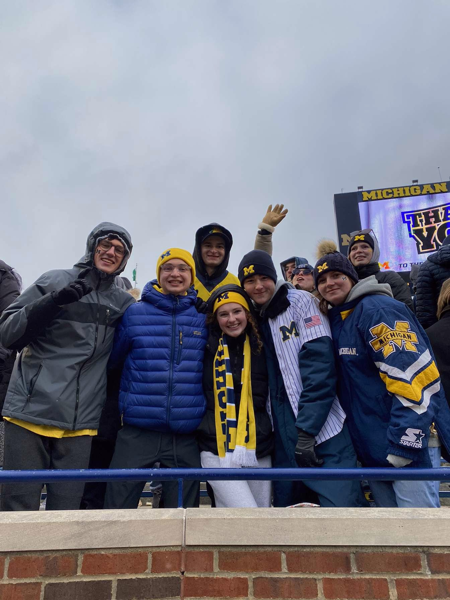
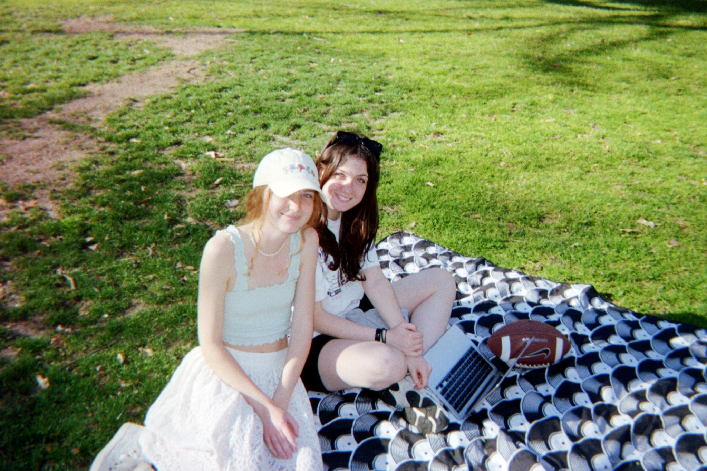
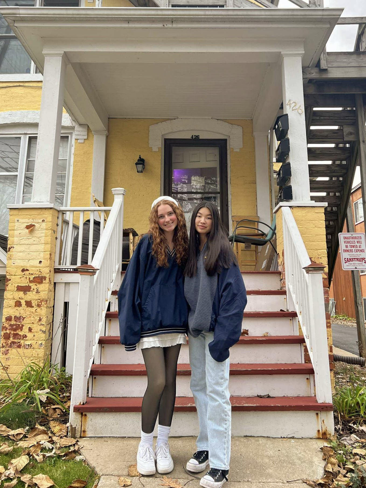
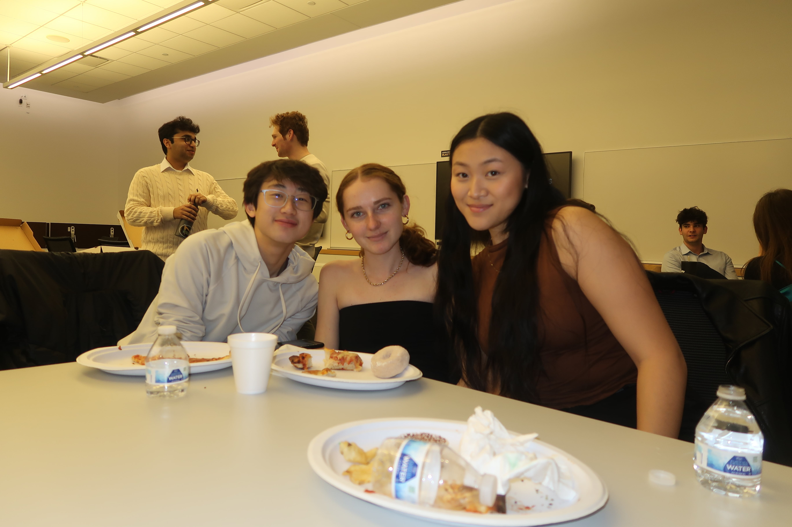
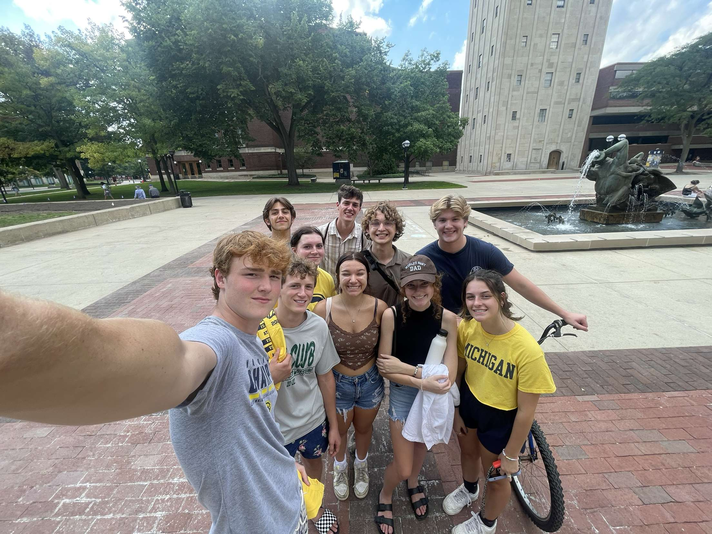
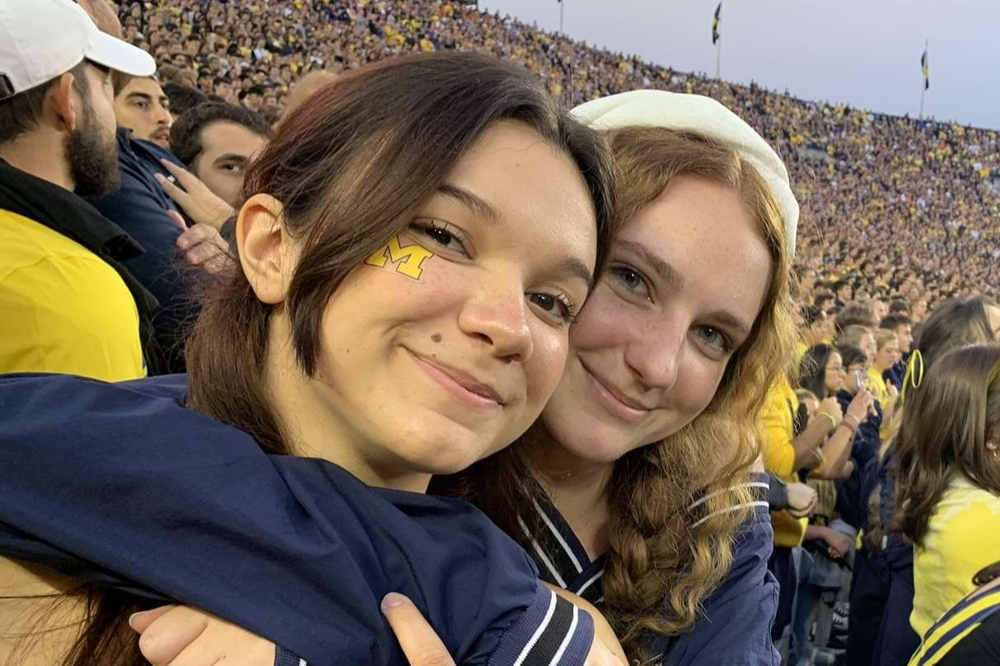
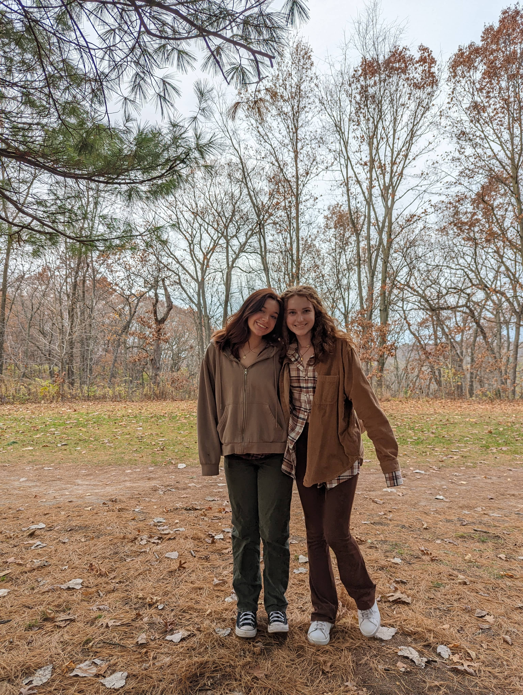
High School
I graduated from West Michigan Aviation Academy in May of 2022 in the top ten of my class. My school was at
the Grand Rapids airport! In highschool I was involved in leadership in Student Council, NHS, and yearbook.
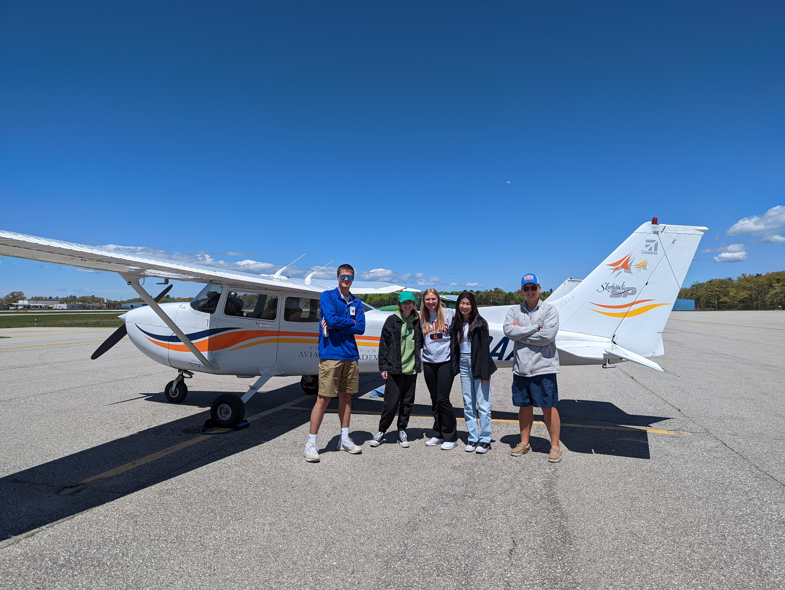
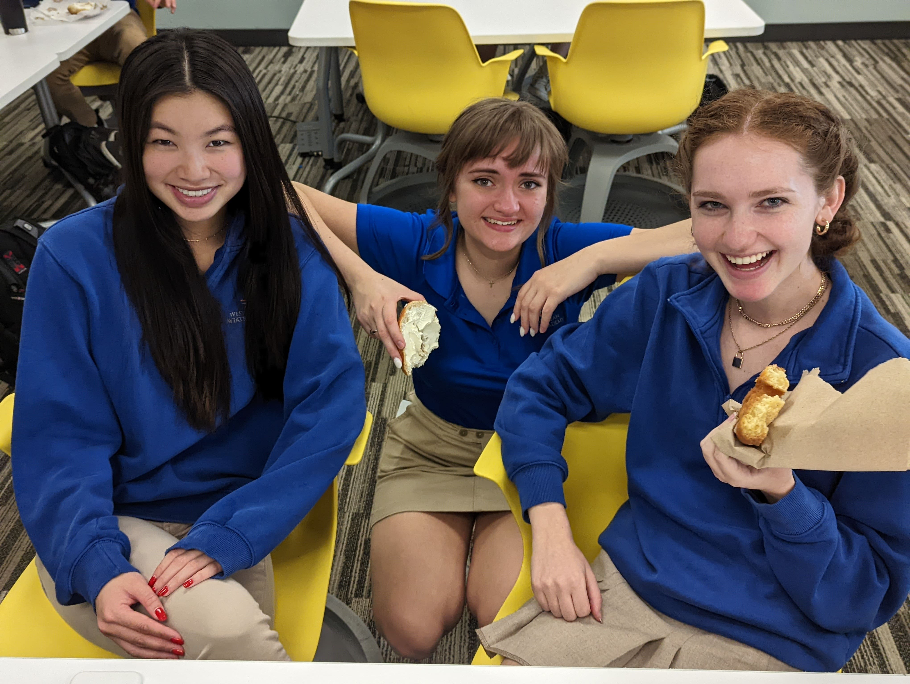
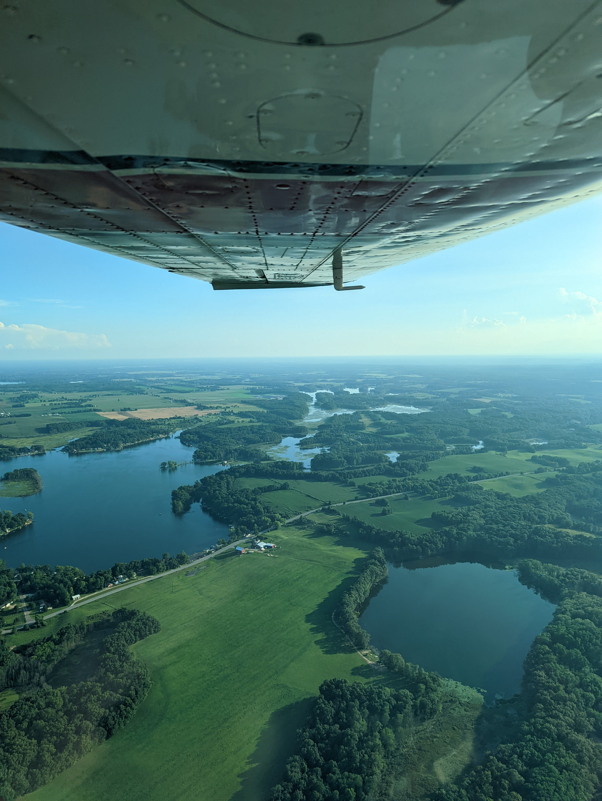
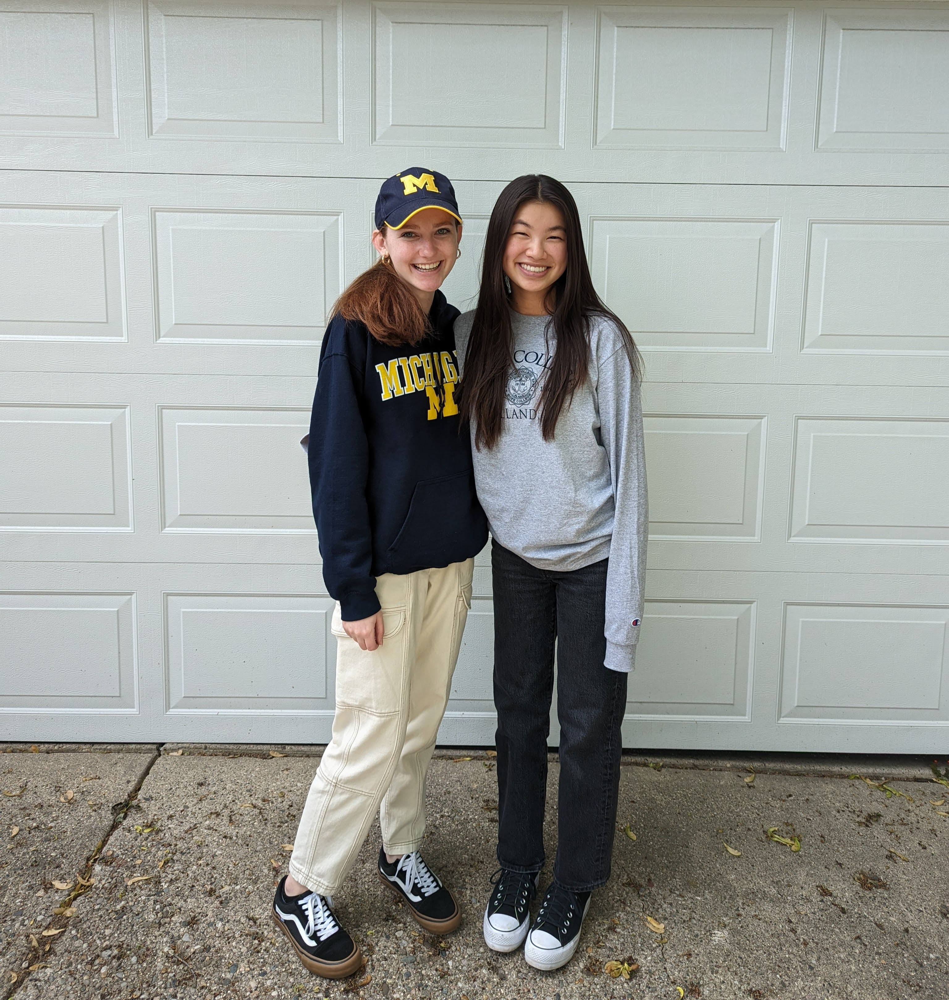
Reading
I LOVE reading. When I was little, my siblings and I would max out the amount of books we could check out at the library each week. As I've gotten older I've slowed down a bit, but I still read quite a bit. My current goal is to read all of the books on NYT's
Top 100 books of the 21st Century. So far I've read three, so there's a long way to go.
Fashion

If you know me in real life, you would definitely say one of the most unique things about me is my style. My favorite thing to do everyday is get dressed, so I'm always playing around with my outfits.
In the past few years, I've been shopping more sustainably and attempting to fix my overconsumption of clothing. It's something I'm very passionate about, and I'll link a few videos below if you
want to learn more about the current state of the fashion industry. What are some steps that I've taken to be more sustainable?
Thrifting, outift planning through Whering, and outfit repeating!!
Videos to get you started:
Decreasing Clothing Quality
Environmental Costs
Slow Fashion
Follow me on:
Whering
TikTok